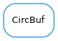

CircBuf¶

-
class
CircBuf(leng)[source]¶ Bases:
objectA circular buffer of Python values.
Examples:
>>> cb = CircBuf(3) >>> cb.is_empty() 1 >>> cb.put('first') >>> cb.is_empty() 0 >>> cb.put('second') >>> cb.put('third') >>> cb.is_full() 1 >>> cb.put('fourth') >>> cb.get() 'second' >>> cb.get() 'third' >>> cb.get() 'fourth' >>> cb.is_empty() 1